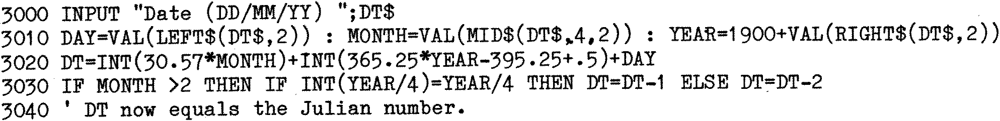
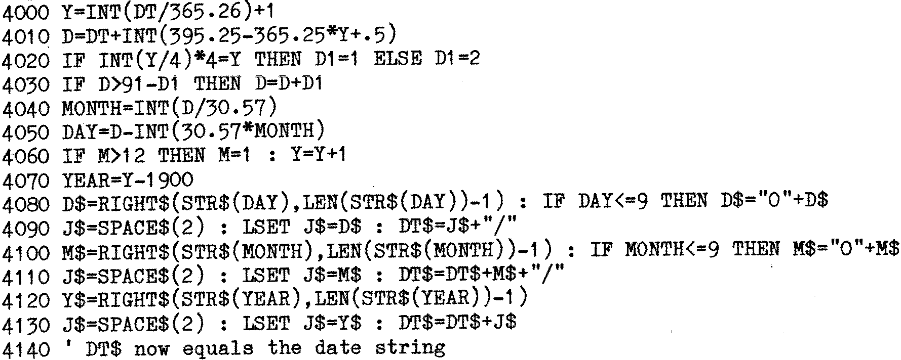

80-Bus News |
November–December 1982 · Volume 1 · Issue 4 |
| Page 35 of 51 |
|---|
An off shoot of presenting the date is the ability to use the date in numerical sorts. The obvious method is split a date into its component parts, using the tens and units of the year, the month and the day; so that 21/09/82 would end up as 820921. This would work as each day is a unique number and days increase in ascending order. However, the number sequence is not contiguous which could cause a number of problems, not the least of which is the complicated validation to determine if a date is missing within a sequence of dates, or possibly an extra day having been entered in error. Whilst initially attractive, the method of using the date backwards has a number of disadvantages. Better then that the number sequence be contiguous. This can be achieved by starting at a base date and counting upwards. The only problem then is to decide the base date and how to cope with leap years, etc.
A numeric sequence often used for this is the Julian date. Based on the year nought. It is accurate but is confused by the normal slippage of leap years every four hundred years, also by the abnormal leap year skip which occurs every 4000 years. The next modulo 4000 leap year correction takes place in the year 2000, and the one after that in the year 6000. The one in the year 2000 might be of interest, but the one in the year 6000 will probably only be important to someone with an interest in cryogenics. However, for general purposes, the Julian number has a lot going for it.
To convert an input date to a Julian number the following simple routine may be used, it does assume that the date will be this century.
This is all very good, the conversion back again is also simple, with the addition in this case to convert the number to a string in the same form as the input.
So having started with clock hardware, I have finished with Julian dates. Time is an interesting subject, you can do so much with it. I only wish there were a program to provide me with about forty hours in a day, then perhaps I would have time to do everything I wish to do and still find time to sleep.
| Page 35 of 51 |
|---|